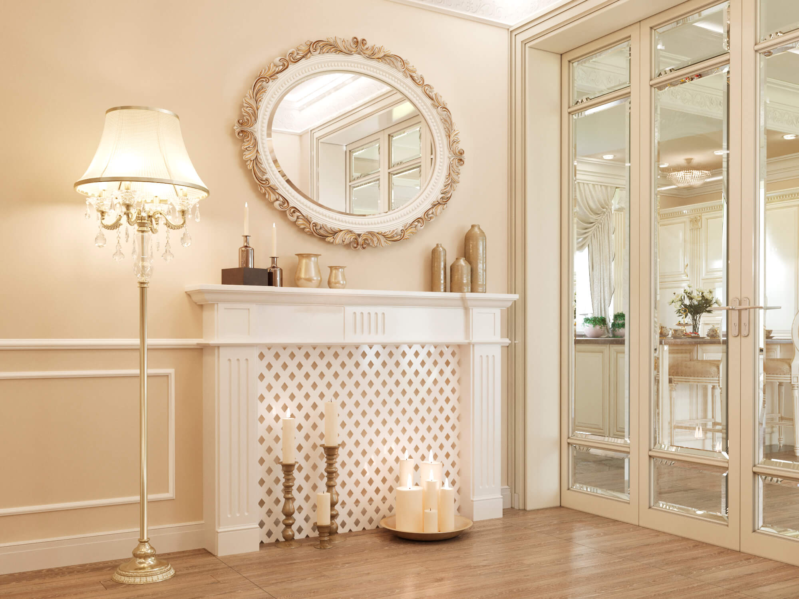
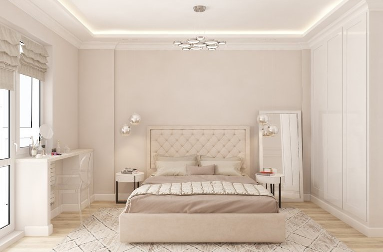
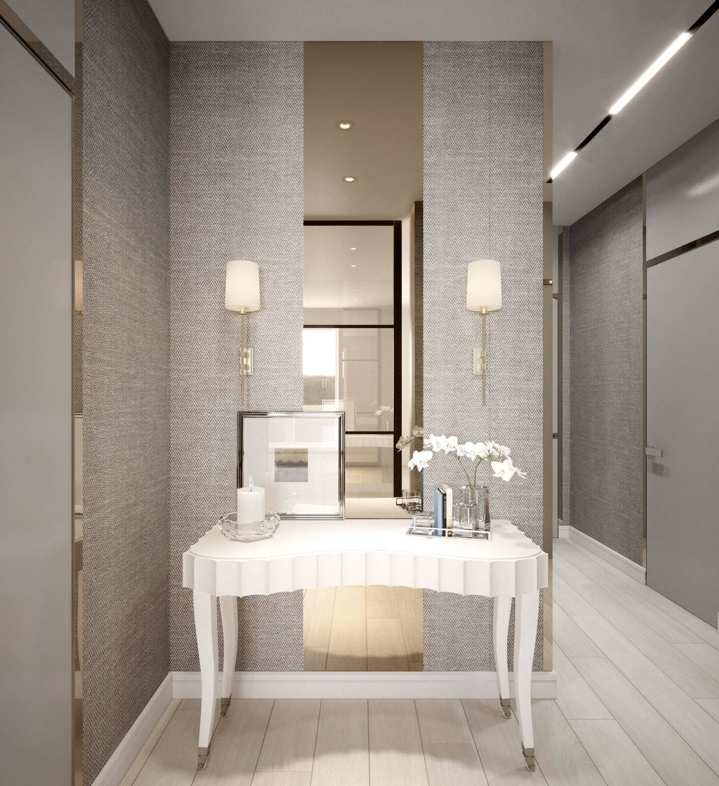

Дом — это место, где вы чувствуете себя максимально комфортно и безопасно. И то, как его оформить, выбираете именно вы. Интерьер жилья отражает вкусы и предпочтения хозяина, его интересы и образ жизни. Каждый человек имеет любимый цвет или их сочетания. И, конечно, он бы хотел его выбрать для оформления своего жилья. Одним из самых популярных цветов в интерьере считается бежевый – классический нейтральный оттенок, который подойдёт под любой стиль дизайна.
Бежевый цвет в прихожей. Пример 1.
Почему вам стоит выбрать бежевый?
Этот цвет считается самым универсальным, то есть используется во всех стилях дизайна и хорошо сочетается с любым другим цветом, но не спешите идти в магазин и скупать всё бежевое или разбавлять его кислотными оттенками.
Визуализация спальни в бежевом цвете
Бежевый цвет можно часто встретить в природе: натуральное дерево, кожа или песок – всё это оттенки бежевого. Он вносит в интерьер ощущение легкости, поэтому дизайнеры его легко используют в качестве основы, а затем могут разбавлять другими текстурами в виде: плитки, паркета, обоев и др. Лёгкость и универсальность этого цвета так же может послужить как приятный бонус. Представим ситуацию, когда вам наскучил интерьер, а вновь тратить деньги на дизайн-проект или просто на новую мебель не хочется. Здесь идеальным вариантом послужит выбор другого цвета для «отвода» глаз. Таким цветом может послужить любой другой цвет будь то чёрный или зелёный. Примеры таких сочетаний мы рассмотрим ниже. Хоть цвет и считается классическим, его часто используют в современных стилях дизайна. Но есть и другая сторона медали, когда заказчик любит яркость. Дизайнер отказывается от бежевого цвета, так как иногда его считают слишком тусклым и скучным. Однако если грамотно сочетать бежевый с другими цветами, то получится свежий и эффектный интерьер, который понравится любому.
Сочетание бежевого в интерьере: Основные правила дизайна
Оттенки этого цвета красиво сочетаются между собой: например, оттенок капучино отлично контрастирует с нежным золотистым бежевым.
